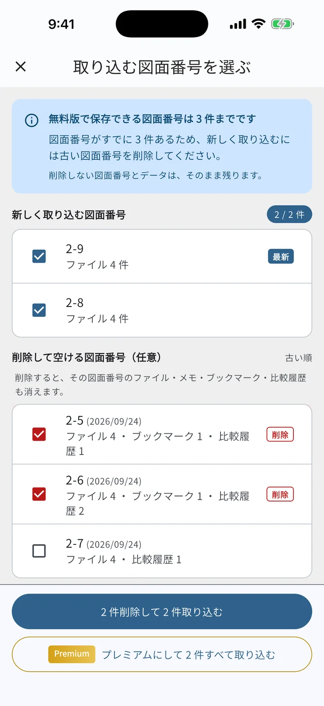
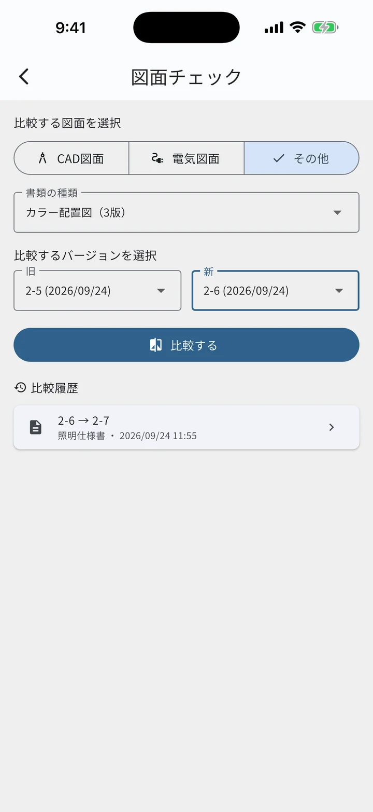

このアプリは、一条工務店で家を建てた施主が、個人で開発しています。
打ち合わせの間は、自分でも使っていたので、時間や費用をかけることにも説明がつきました。着手承諾のあとも開発を続けていますが、趣味としては時間も費用もそれなりにかかっています（iPhone 向けにアプリを公開し続けるための年会費や、開発と運用に使っているツールの費用など）。正直なところ、家族の目も少しずつ厳しくなってきました。
これからも胸を張って続けていけるように、まずはかかっている費用をまかなえることを目標に、プレミアムの内容を見直すことにしました。
これまでのプレミアムの特典（広告の非表示・家族と共有）は、アプリの中心である図面や見積りの機能に関わるものではありませんでした。一方で、無料で使える範囲を大きく削り、これまで使ってくださっている方に不便をかけることは避けたいと考えました。悩んだ末に決めたのが、今回の内容です。
図面番号は、図面番号一覧で 1 行に並ぶ単位で数えます。「2-7」と、枝番を付けた「2-7-1」は、同じ 1 件として数えます。

図面チェックに「その他」が加わりました。CAD 図面と電気図面に加えて、照明仕様書、カラーパース、カラー配置図、カラー立面図、プレゼンテーションなどの書類も、新旧 2 つの版を比較できます。プレミアムでなくても使えます。

A. 必要ありません。図面番号を件数の制限なく保存できます。
A. 図面番号を減らす必要はありません。お手元にまだ取り込んでいない図面があり、無料版のまま使い続ける場合は、10月31日までに取り込んでおいていただく必要があります。11月1日の時点で保存している件数までは、その後も保存できます。
A. 保存している件数のまま、これまでどおり使えます。新しい図面番号を取り込むときだけ、古い図面番号と入れ替えていただくか、プレミアムにしていただく必要があります。
A. 11月1日以降に削除すると、保存できる件数も削除後の件数になります（3 件より少なくはなりません）。取り込みのときの入れ替えであれば、件数は減りません。
A. プレミアムは、新しい端末で「購入を復元」すると使えます。図面番号とデータは、バックアップから復元できます。
A. 端末の図面番号とデータが、バックアップを取ったときと同じ内容になります。3 件より多く入っていても、減らさずに使えます（その件数の中で入れ替えられます）。
A. バックアップを家族の端末で復元すると、同じ図面番号とデータをその端末でも使えるようになります。無料版のままでも、バックアップに入っている件数まで保存できます。